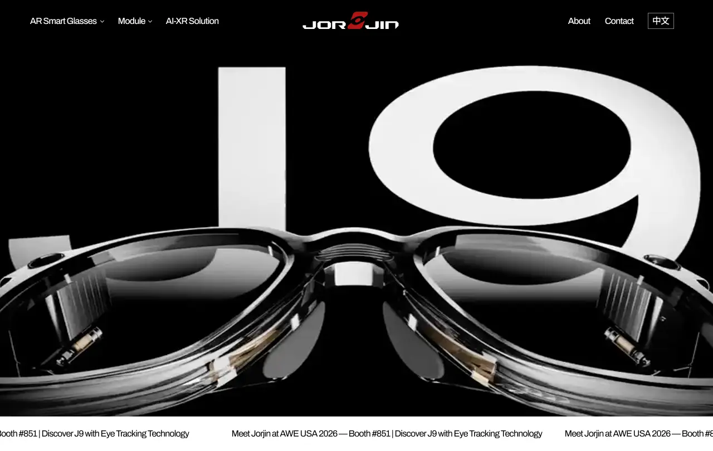
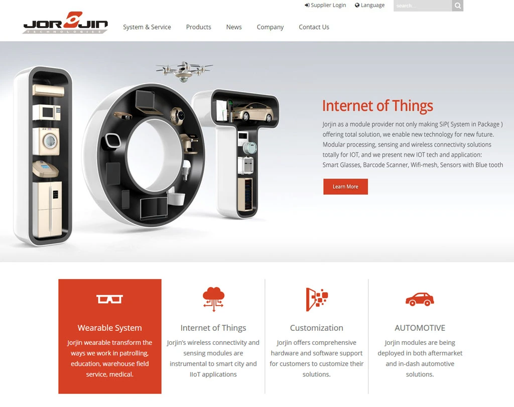
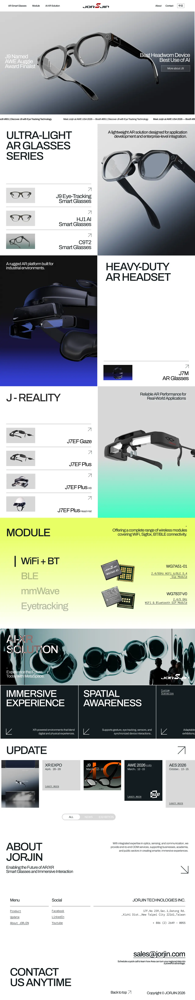
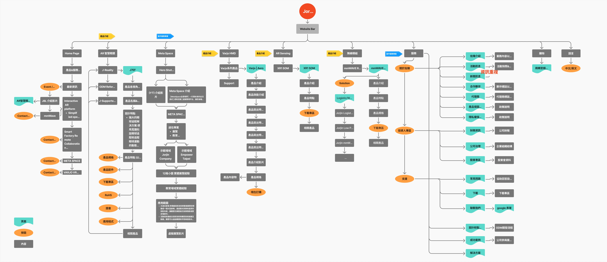
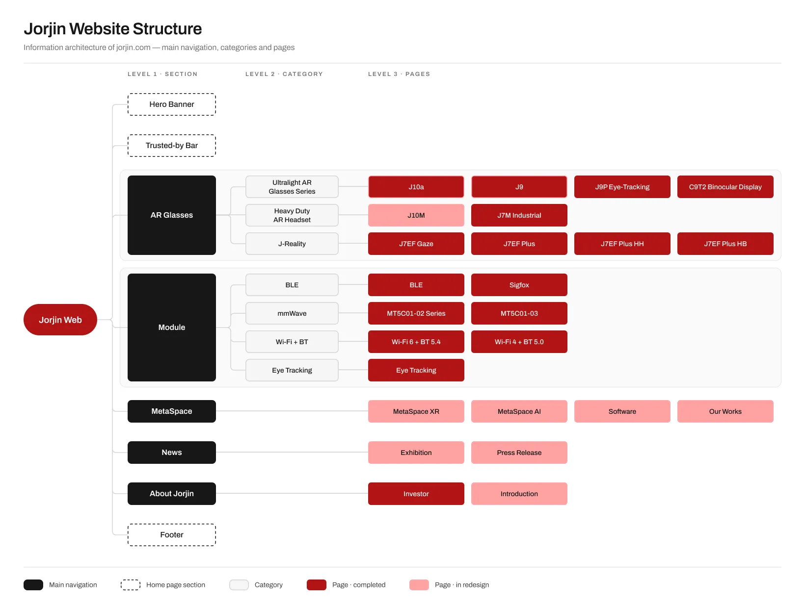
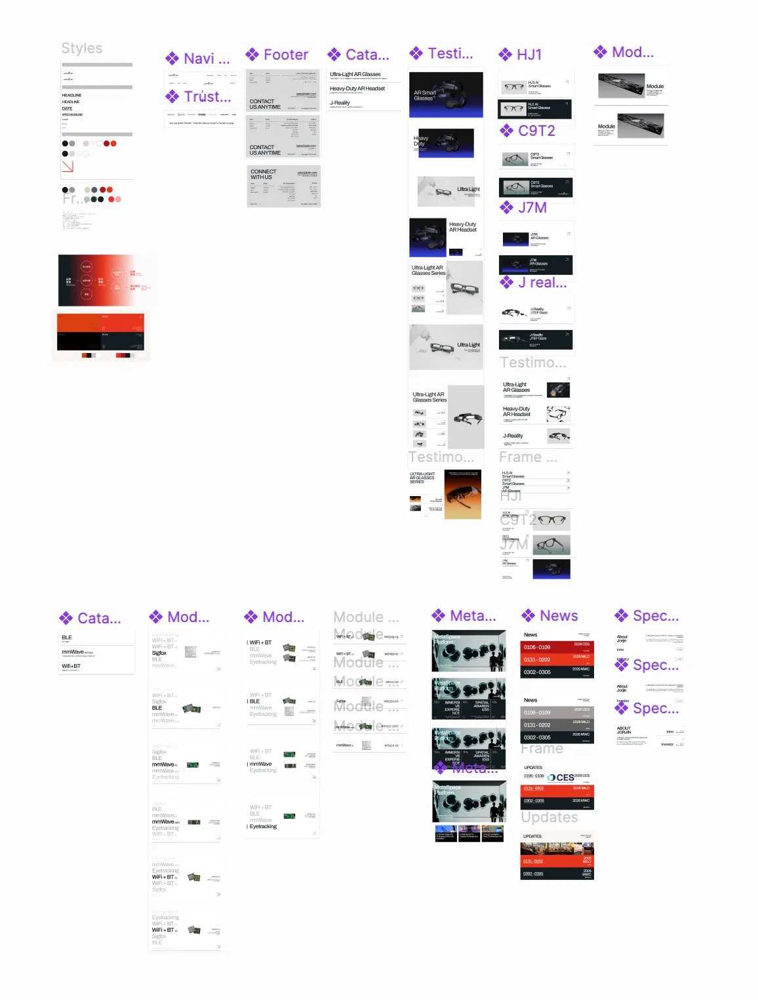
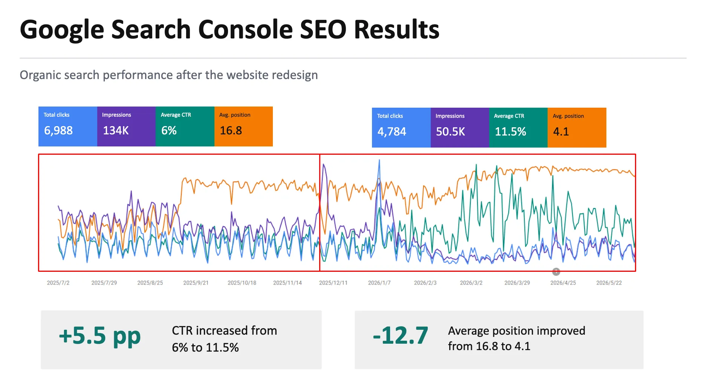
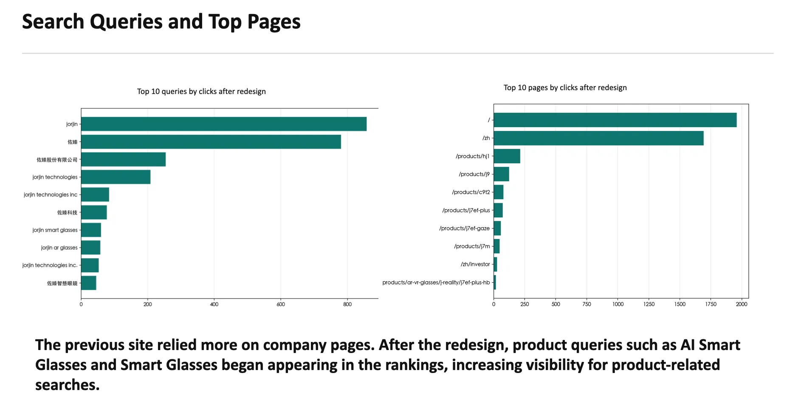

A company with strong hardware design that wasn't coming across online.
Jorjin is a hardware-first smart glasses company with no dedicated front-end engineer, and its site ran on an aging WordPress template. In stakeholder interviews across sales and management, the same gap kept surfacing: visitors — mostly B2B partners — couldn't tell within seconds what Jorjin actually does.
Three business lines were flattened into one undifferentiated pile of product pages, and the site barely surfaced in search (average position 16.8 — the bottom of page 2). I led a full rebuild to fix three things at once: make the company's scope legible at a glance, give the product the premium visual treatment it deserved, and build an SEO foundation that could actually be found.


From an aging WordPress template to a hand-built Next.js site with a distinct visual identity.
Three constraints, each limiting how I could solve the others.
This was never a visual refresh. Three problems had to be solved at the same time, and each one narrowed the options for the rest.
- No in-house front-end. A hardware-first company with no dedicated front-end engineer — whatever I designed, I also had to be able to ship myself.
- Three business lines, one story. ODM manufacturing, module sales, and AR application planning all had to coexist without overwhelming a first-time visitor.
- It had to look premium. The site needed to carry Jorjin's strong industrial design, not flatten it into a generic template.
Interviews pointed to one spine: ODM.
Before touching the design, I ran lightweight interviews with each internal team to learn what they needed to communicate externally, then went deeper with sales and management to pin down the real product strengths and communication priorities.
Giving all three business lines equal billing would have been "fair" — and would have left every visitor equally lost. The fix wasn't visual; it was deciding what the site was actually for. I made ODM manufacturing the central axis and let module sales and AR solutions extend outward from it.
- ODM / OEM. Full glasses manufacturing — the core business, and the site's primary axis.
- Module. Core optical modules, aimed at system integrators.
- Solution / Application. AR deployment planning, aimed at enterprise end-users.


Information architecture, before and after — restructured around ODM as the central axis, extending to modules and AR solutions.
Why & trade-off: Those two audiences take one extra click to reach their line — in exchange, the majority grasp what the company is within seconds. I optimized for clarity for the many over equal weight for all.
Design-led, and built to ship by one person.
With the architecture settled, the build followed a single principle: let the design lead, and keep every layer something I could own end to end.
- A Design System instead of a template. Starting from the visual designer's layout, I synthesized a full system — a dark, high-contrast palette, a defined type scale, and button states (Normal / Hover / Selected) — so product renders and video dropped straight into the layout without adjustment.
- Hand-planned responsive, no UI framework. Every breakpoint was planned by hand rather than mechanically compressed. It cost real time up front, but for a company whose edge is design, a generic auto-scaled layout would have undercut the one thing we were selling.
- A front-end I could own. A Next.js rebuild, so design decisions landed directly in code with no hand-off loss between design and build.
- Technical SEO, iterated on live data. With no SEO budget or keyword tools, I bet on fundamentals — a dynamic Sitemap covering every
/products/[slug], bilingualhreflang, and per-page metadata — then tuned copy and internal links on Google Search Console data.

The site started showing up — and reading clearly.
Comparison: before redesign (Jul–Nov 2025) vs. after redesign (Dec 2025–May 2026), via Google Search Console.
From the bottom of page 2 to the top of page 1. After the technical SEO restructure, Google's relevance assessment for the pages improved sharply.
New title tags and meta descriptions — together with the higher ranking — made searchers far more likely to choose Jorjin from the results.
The dynamic Sitemap auto-updates on publish; all 8 new pages were indexed and drew organic traffic, and the /zh homepage gained independent search traffic — confirming correct hreflang configuration.


The thread through all of it was holding to a design-first principle. As AI tools push more sites toward the same templates, that distinctiveness is itself the competitive advantage — the right bet for a company whose core competency is hardware design.